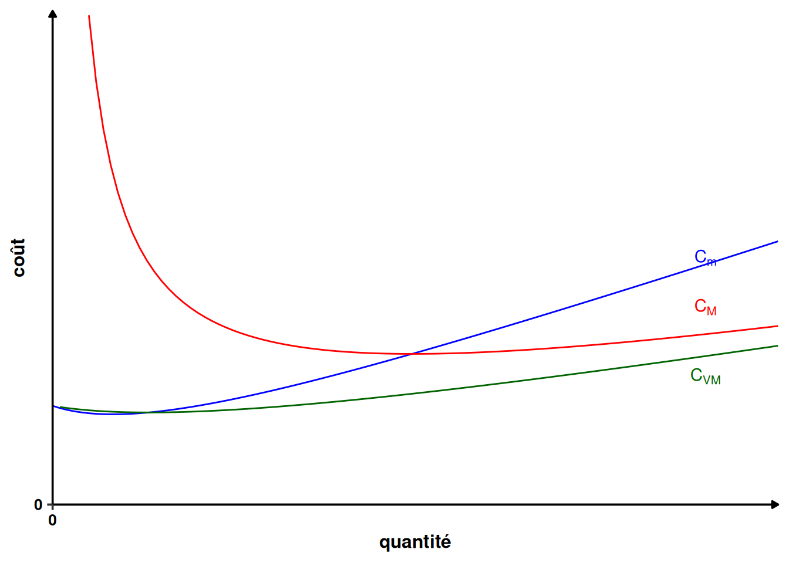
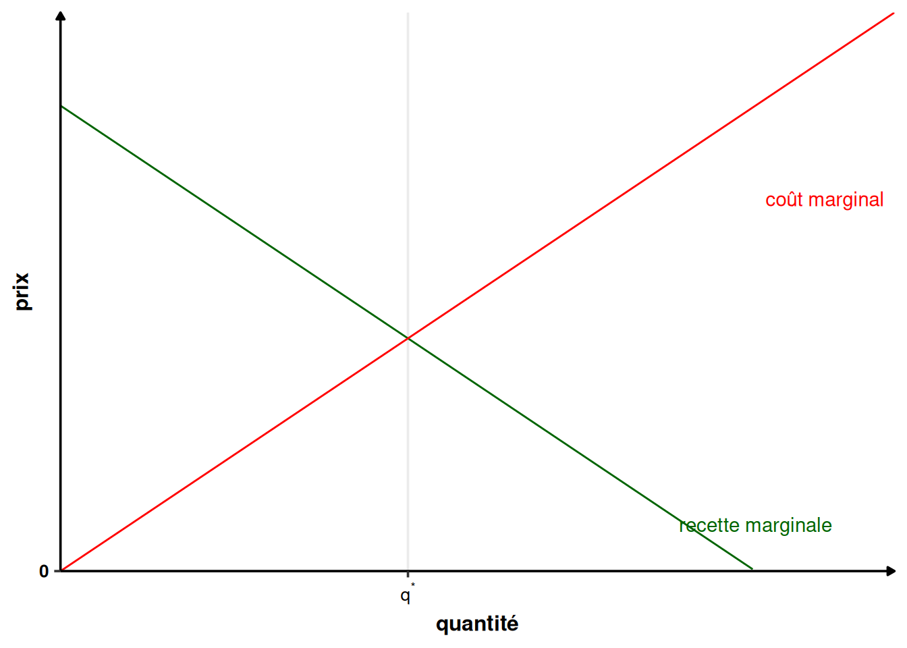
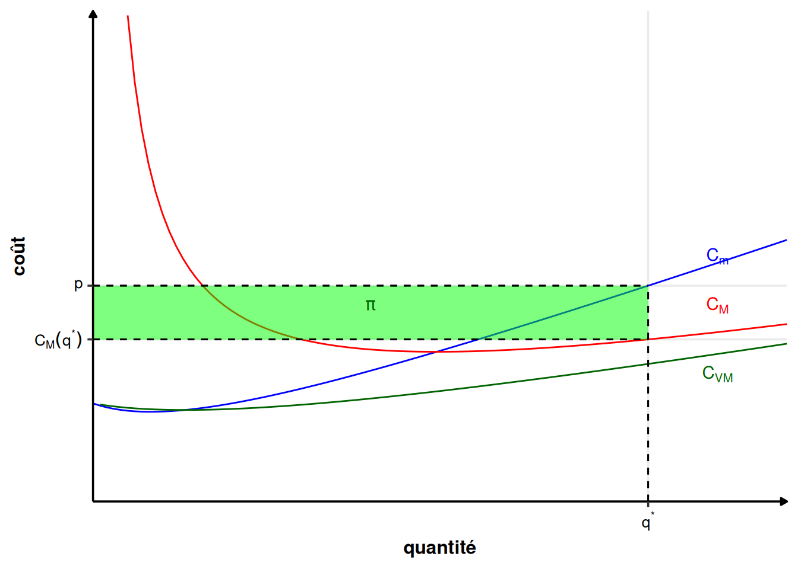
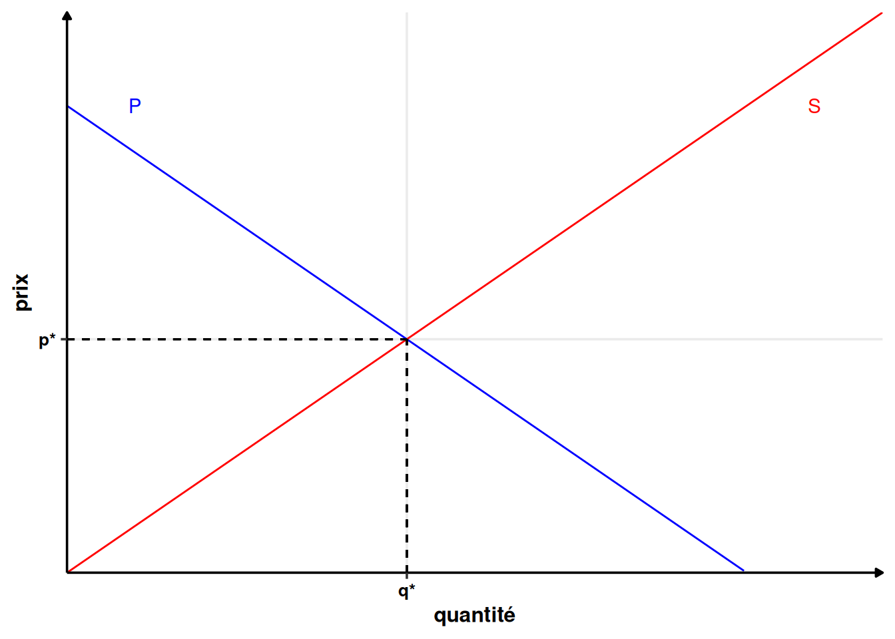

2 Le marché en concurrence pure et parfaite
2.1 Les hypothèses de la concurrence pure et parfaite (CPP)
5 hypothèses garantissent l’existence d’un équilibre en concurrence pure et parfaite :
- Atomicité des agents ;
- Information parfaite ;
- Mobilité parfaite des facteurs de production ;
- Homogénéité des biens ;
- Libre entrée et sortie du marché.
Explicitons ce que signifient chacune de ces hypothèses.
Hypothèse 2.1 (Atomicité des agents) L’hypothèse d’atomicité des agents implique qu’aucun agent, individu ou entreprise, n’a d’influence individuellement sur les prix. En d’autres termes, chaque agent est “petit” face au marché et considère le prix du marché comme une donnée qu’il ne peut pas influencer. On dit que les agents sont price-taker sur le marché.
Hypothèse 2.2 (Information parfaite) L’hypothèse d’information parfaite signifie que tous les acteurs disposent de toutes les informations pertinentes pour prendre leurs décisions. Il n’y a, par exemple, pas de coût de recherche d’information.
Hypothèse 2.3 (Mobilité parfaite des facteurs de production) L’hypothèse de mobilité parfaite des facteurs de production garantit l’homogénéité spatiale du prix des facteurs. Les facteurs de production se déplacent où ils sont le mieux rémunérés. Les différences de coûts entre producteurs ne peuvent donc être dues qu’aux différences technologiques entre ceux-ci, et non à une différence de coût des facteurs de production.
Hypothèse 2.4 (Homogénéité des biens) L’homogénéité des biens signifie que tous les biens vendus sur un marché sont parfaitement substituables. Sur un marché donné, tous les biens ont la même qualité. Le consommateur est donc indifférent entre tous les biens vendus. Il n’y aussi pas d’effet des marques.
Hypothèse 2.5 (Libre entrée et sortie du marché) L’hypothèse de libre entrée et sortie du marché signifie qu’il n’y pas de barrière à l’entrée dans le marché. Concrètement, il est impossible de faire un bénéfice sur la dernière unité vendue en concurrence pure et parfaite, sinon un concurrent pourrait entrer sur le marché et faire des bénéfices.
La violation d’une de ces hypothèses nous fait sortir du cadre de la CPP et confère un pouvoir de marché aux producteurs ou aux consommateurs en place. Dans le cadre de ce cours, nous allons uniquement nous intéressé au pouvoir de marché des producteurs.
2.2 Le producteur
2.2.1 Fonctions de coût
En général, un producteur est modélisé par une fonction de production, c’est-à-dire une fonction qui donne les quantités produites de biens en fonction des facteurs de productions. À l’aide de cette fonction de production, il est possible de construire une fonction de coût.
Définition 2.1 (Fonction de coût total) La fonction de coût total, notée \(C\) ou \(CT\), donne le coût total de production de \(q\) unités de bien. Elle se décompose en un coût fixe \(CF\) (qui ne dépend pas de \(q\)) et un coût variable \(CV\) qui dépend de \(q\) : \[C(q)=CF+ CV(q)\]
Définition 2.2 (Coût moyen) Le coût moyen est le coût de production moyen d’une unité, noté \(C_M\) : \[C_M(q) = \frac{C(q)}{q}\]
Le coût moyen se décompose en un coût fixe moyen \(CF_M\) : \[CF_M(q)=\frac{CF}{q}\] Et un coût variable moyen \(CV_M\) : \[CV_M(q)=\frac{CV(q)}{q}\] On a alors : \[ C_M(q)=CF_M(q) +CV_M(q) \tag{2.1}\]
Preuve. \[ \begin{array}{rcl} C_M(q) &=& \frac{C(q)}{q}\\ &=& \frac{CF + CV(q)}{q}\\ &=& \frac{CF}{q}+\frac{CV(q)}{q}\\ &=& CF_M(q) + CV_M(q) \end{array} \]
Définition 2.3 (Coût marginal) Le coût marginal, noté \(C_m\), est l’augmentation du coût lié à la production d’une unité supplémentaire : \[ C_m(q)=\lim_{\Delta q\to 0}\frac{C(q+\Delta q)-C(q)}{\Delta q}=C'(q) \]
Autrement dit, le coût marginal est la variation de coût total quand la production varie “un tout petit peu” (infiniment peu en fait).
Proposition 2.1 (Variations des courbes de coût) En général, le coût marginal diminue puis augmente, car la productivité marginale est d’abord croissante, puis décroissante.
Le coût variable moyen est d’abord décroissant, puis croissant, pour la même raison.
Le coût fixe moyen est toujours décroissant, car le coût fixe ne dépend pas des quantités produites et \(CFM=CF/q\) est donc une fonction inverse.
La décomposition donnée par l’équation 2.1 implique que le coût moyen est d’abord décroissant, puis croissant.
Proposition 2.2 (Relations entre les coûts) Lorsque le coût marginal est inférieur au coût (variable) moyen (\(C_m(q)<C_M(q)\)), le coût moyen diminue. Lorsque le coût marginal est supérieur au coût (variable) moyen (\(C_m(q)>C_M(q)\)), le coût moyen augmente. La courbe de coût marginal coupe donc la courbe de coût (variable) moyen à son minimum.
L’intuition de ce résultat est la suivante : si le coût d’une unité supplémentaire est supérieur au coût moyen des unités précédentes, alors l’unité supplémentaire produite sera plus chère que la moyenne du coût des unités précédentes produites, augmentant de ce fait le coût moyen, et vice-versa. L’illustration graphique est donnée sur la figure 2.1
Preuve. En son minimum, le coût moyen est tel que \(C_M'(q)=0\). \[ \begin{array}{crcl} &C_M'(q)&=&0\\ \Leftrightarrow & \left(\frac{C(q)}{q}\right)'&=& 0\\ \Leftrightarrow & \frac{C'(q)q-C(q)}{q^2}&=& 0\\ \Leftrightarrow & \frac{C_m(q)}{q}-\frac{C(q)}{q^2}&=& 0\\ \Leftrightarrow & C_m(q)q-C(q)&=& 0\\ \Leftrightarrow & C_m(q)&=& \frac{C(q)}{q}\\ \Leftrightarrow & C_m(q)&=& C_M(q) \end{array} \]
2.2.2 L’offre du producteur
Définition 2.4 (Recette totale) La recette totale, notée \(R\) ou \(RT\), est la recette issue de la vente des biens. Pour \(q\) unités de bien vendus, le producteur gagne \(R(q)\), autrement dit, c’est le chiffre d’affaire du producteur (pour ce bien).
Définition 2.5 (Recette marginale) La recette marginale, notée \(R_m\) est la recette rapportée par une unité supplémentaire de bien vendue. \[R_m(q)=R'(q)\]
Définition 2.6 (Profit) Le profit, noté \(\pi\) est la différence entre la recette totale et le coût total de production : \[\pi(q)=R(q)-C(q)\]
Hypothèse 2.6 (Programme du producteur) Le producteur choisit la quantité produite de manière à maximiser son profit. Mathématiquement, il résout le programme suivant : \[\max_q\pi(q)=\max_q R(q)-C(q)\]
Théorème 2.1 (Offre du producteur) Le programme du producteur est tel que la quantité optimale produite \(q^*\) égalise le coût marginal et la recette marginale (condition du premier ordre) : \[ R_m(q^*) =C_m(q^*) \tag{2.2}\] Il est aussi tel que la recette marginal croît moins vite que le coût marginal à l’optimum (condition du second ordre) : \[ R_m'(q^*) <C_m'(q^*) \]
Preuve. L’objectif du producteur est de maximiser son profit : \[ \max_q\pi(q)=\max_q R(q)-C(q) \] À l’optimum, et à condition que les fonctions de coût et de recette soient deux fois dérivables (ce qui sera toujours le cas dans ce cours). La condition du premier ordre s’écrit : \[ \pi'(q)=0\Leftrightarrow R'(q)-C'(q)=0\Leftrightarrow R_m(q)=C_m(q) \] On obtient donc l’équation 2.2. Et la condition du second ordre s’écrit : \[ \pi''(q)<0\Leftrightarrow R''(q)-C''(q)<0\Leftrightarrow R_m'(q^*) <C_m'(q^*) \]
L’intuition pour ce résultat est la suivante. Si la recette marginale est supérieure au coût marginal (\(R_m(q)>C_m(q)\)), alors augmenter la quantité produite rapporte plus que cela ne coûte et donc augmente le profit. À l’inverse, si la recette marginale est inférieure au coût marginal (\(R_m(q)<C_m(q)\)), diminuer la quantité produite diminue plus le coût que la recette du producteur et donc augmente le profit. La situation s’équilibre donc pour \(R_m(q)=C_m(q)\). Si cette égalité n’est pas vérifiée, le producteur peut en effet augmenter son profit en jouant sur la quantité produite.

En concurrence pure et parfaite, le producteur est price-taker. Le prix sur le marché est unique et donné , il vaut \(p\) et ne dépend pas des quantités produites par un producteur. Le producteur vend son bien au prix défini par le marché. La recette totale devient donc \(R(q)=p\times q\), avec \(p\) fixé. La recette marginale est donc \(R_m(q)=R'(q)=p\). En réécrivant l’équation 2.2, on obtient en concurrence pure et parfaite : \[p=C_m(q)\]
Proposition 2.3 (Offre du producteur en CPP) En concurrence pure et parfaite, le producteur maximise son profit en égalisant son coût marginal au prix du marché : \[C_m(q^*)=p\] À condition que son coût marginal soit croissant en \(q^*\) (\(C_m'(q^*)>0\)).
Définition 2.7 (Courbe d’offre d’un producteur) La courbe d’offre du producteur donne la quantité maximale que souhaite produire un producteur pour chaque prix.
Proposition 2.4 (Courbe d’offre en CPP) En concurrence pure et parfaite, la courbe d’offre du producteur est donnée le coût marginal. \[p=C_m(q)\]
Le profit du producteur s’écrit alors : \[ \pi(q)=R(q)-C(q)=pq-C(q)=pq-C_M(q)q=q(p-C_M(q)) \] \[ \pi(q)=q(p-C_M(q)) \tag{2.3}\] L’équation 2.3 nous dit que le profit d’un producteur en concurrence pure et parfaite est la différence entre le prix de vente et le coût moyen de production multiplié par le nombre d’unités vendues. Si ce prix est inférieur au coût moyen de toutes les unités vendues, le profit sera négatif.

2.3 Le consommateur
La modélisation des consommateurs dans ce cours est simple.
Définition 2.8 (Demande individuelle) La fonction de demande d’un consommateur correspond à la suite des prix maximaux qu’un consommateur est prêt à payer pour obtenir une unité supplémentaire du bien. On la note souvent \(Q\).
On appelle ce prix maximum le prix de réserve.
Proposition 2.5 (Variation de la fonction de demande) La fonction de demande est décroissante.
L’intuition est la suivante, un consommateur est prêt à payer plus pour la première unité de biens reçu que pour la suivante. Par exemple, la premier litre d’eau dans le désert à beaucoup plus de valeur que le dixième.
Remarque (Demande et demande inverse). La fonction de demande donne la quantité en fonction du prix (\(Q(p)\)). La plupart du temps, nous auront besoin de la fonction de demande inverse (\(P(q)\)), qui donne le prix en fonction de la quantité. Il faudra donc inverser la fonction de demande pour obtenir la fonction de demande inverse.
2.4 L’équilibre de marché
Définition 2.9 (Demande agrégée (D)) La demande agrégée (D) est la somme des demandes individuelles pour chaque niveau de prix.
Définition 2.10 (Offre agrégée (S)) L’offre agrégée (S) est la somme des offres individuelles pour chaque niveau de prix.
La courbe d’offre correspond à la série des coûts marginaux de production, c’est-à-dire aux prix minimaux auxquels les producteurs souhaitent vendre une unité supplémentaire du bien.
Définition 2.11 (Équilibre de marché) L’équilibre de marché se fait à l’intersection entre l’offre agrégée (S) et la demande agrégée (D) (quand S=D).
À l’équilibre de marché, on obtient une quantité d’équilibre (notée \(q^*\)) et un prix d’équilibre (noté \(p^*\)). La vente de toutes les unités jusqu’à la quantité d’équilibre \(q^*\) au prix \(p^*\) procure un surplus aux agents économiques.

Définition 2.12 (Surplus des consommateurs) Le surplus des consommateurs est la somme des différences entre le prix de réserve des consommateurs et le prix payé par le consommateur pour obtenir les biens. Sur le graphique quantité prix \((q, p)\), c’est l’aire comprise entre la courbe de demande et la droite horizontale dont l’ordonnée est le prix d’échange. Formellement : \[S_c=\int_0^{q^*}P(q)-p^* dq\]
Remarque. Seule la dernière unité de bien achetée par les consommateur l’est au prix de réserve. Il n’y a pas de gain à l’échange pour cette unité, mais pour toutes les autres, il y en a, ce qui explique pourquoi il y a un surplus à l’échange, et pourquoi celui-ci a lieu.
Définition 2.13 (Surplus des producteurs) Le surplus des producteurs est la somme des différences entre le prix auquel les producteurs vendent le bien et la courbe de coût marginal, qui représente le coût d’une unité supplémentaire produite. Sur le graphique quantité prix \((q, p)\), c’est l’aire comprise entre le prix de vente et la courbe de coût marginal. Formellement : \[S_p=\int_0^{q^*}p^*-S(q) dq\]
En pratique, on utilisera jamais la formule avec des intégrales, mais on calculera l’aire du triangle (ou trapèze) concerné.
Proposition 2.6 (Propriétés de l’équilibre en concurrence pure et parfaite) L’équilibre en CPP maximise le surplus total. Tout autre couple prix/quantité abouti à un surplus total plus faible.
L’équilibre en CPP est dit Pareto-optimal, i.e., il est impossible d’améliorer la situation d’un agent sans détériorer celle d’un autre. C’est ce qu’on appelle le premier théorème du bien-être.
Ces propriétés font de la CPP une “référence” par rapport à laquelle on peut comparer les résultats des autres structures de marché.
2.5 Perception par les agents isolés
L’hypothèse d’atomicité indique que les agents individuels sont isolés au sein d’un très grand nombre d’autres agents. Ainsi, aucun agent n’a d’influence sur le prix s’il modifie son comportement. Une conséquence directe est que le comportement des autres agents est perçu comme étant infiniment élastique. C’est-à-dire qu’un producteur sait qu’au prix de marché, il pourra vendre toute sa production, mais que s’il pratique un prix même légèrement plus élevé, il ne vendra rien. Il perçoit ainsi une demande infiniment élastique au prix, au niveau du prix \(p^*\).
Dans la figure 2.6, \(q^*\) représente la production optimale de ce producteur quand il est seul.